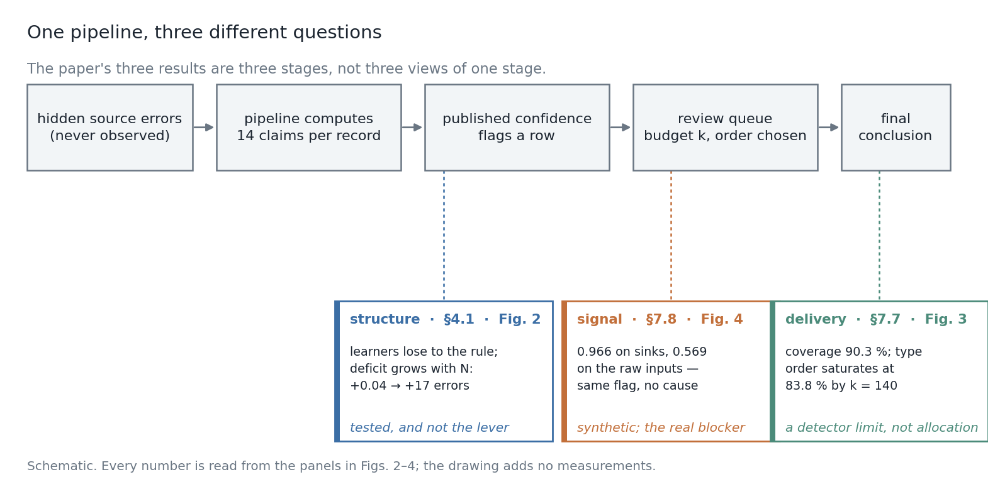

审阅者该先打开哪一条主张？
一页读完的论文。为证据链的审阅层做强化学习——并测量这个问题本身在哪里值得问。
睡眠数据：与 某大学睡眠研究实验室一年 EMA 合作。
应用：SciForge — Zhangyang Gao（AI4Science, Shanghai AI Lab）开发。
机器不盖章 只读排序 人点裁决才有收据
论文 ——《不是调度器，是信号》
English · 한국어 · 中文。四张图。论文里每个数字都被测试绑到已提交的产物上， 正文没法漂离产生它的那次运行。
一句话。 在预算固定的依赖图上，策略能控制的那一半——下一条打开哪条主张——已经接近耗尽； 它控制不了的那一半——哪条主张看起来可疑——才是剩余错误的所在。
三个结果，三个阶段
三个发现是同一条流水线的三个阶段，不是同一阶段的三种看法：
| 阶段 | 主张 | 论文 | 数字 |
|---|---|---|---|
| 结构 | 学习策略打不过一行规则，且赤字随图规模增大 | §4.1，图 2 | 36 个格子；N=21 时 +0.04，N=500 时 +17 |
| 交付 | 队列有上限，缺的是检测器而不是分配 | §7.7，图 3 | k = 140 时 83.8 %；1.2 % 基率下的 885 行里占 16.2 % |
| 信号 | 公开标记排序的是后果，不是原因 | §7.8，图 4 | 有效性汇点 0.966，原始输入 0.569，汇总 0.807 |
四张图

experiments/make_figures.py 从图 2–4 的面板读取。图 2 赤字对图规模 ·
图 3 队列上限 ·
图 4 定位 AUC。
四张都可用 python3 experiments/make_figures.py 重绘。


真实数据能说什么
237 人的 13,990 条睡眠记录，人工确认的纠错 75 条——占记录 0.54 %。缺陷按类型聚集： 75 条里 57 条（76 %）是把时间写反了。缺陷不会停在原处；它变成错的潜伏期、错的效率、错的结论。
行级复核队列里有 68 条人工确认阳性，基率 6.5 %。同一个置信度标记在四个有效性汇点上 0.966， 在六个派生节点上 0.733，在审阅者真正会打开的四个原始时间戳上 0.569。
不主张什么
没有预算头条。「RL 把人工复核减少 X %」在任何地方都不出现：那句话来自遗留种子 1–20，
在任何地方都没有复现。RETIRED_NUMBERS.md 把它和其他退役值一起登记，测试在它回来时让构建失败。
没有已部署的节省。睡眠纠错是重放，不是把策略放进回路重跑。
没有节点级概率。要点出一条记录的那个原因，需要经审计的正确答案行，实验室还没提供； 在拿到之前，节点级校准不在范围内。
机制是假设。多跳传播必须只从终止奖励重新推导——这能解释结构性失败，但这份数据并不能把它 与其他解释分开。
数字从哪里来
干净克隆上跑三道检查：test_published_numbers.py（19 项）把每个发表数字绑到产物，
test_figures.py（6 项）从 JSON 重新推导每个被绘制的值，
test_retired_numbers.py（3 项）挡住所有受跟踪 markdown 里的退役值。三份草稿带着同样的
630 个数字记号。
原始运行产物不在仓库里：*.rds 与 *.csv 不进 git，只提交聚合值与
calibration.json。
团队与状态
| 成员 | 主责 |
|---|---|
| 1 | PM + 时间线 + L2D 经典 |
| 2 | 策略梯度（REINFORCE → PPO-Lagrangian） |
| 3 | 环境 + GNN + DQN |
| 4 | 基线 + 对照 |
| 5 동채하 | 叙事 + 对接 + 文献 + 写作 + 汇报 |
顾问：某大学睡眠研究实验室 · Zhangyang Gao 博士（AI4Science, Shanghai AI Lab — SciForge）。
验证状态
由 AI 生成；组员尚未独立重跑。护栏守住的是算术——论文数字对产物，图对其 JSON。仍没有第二双眼睛的 是解释。未闭合项见项目文档第 12 节与论文第 8 节。